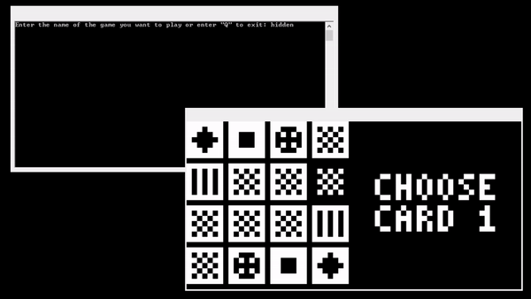
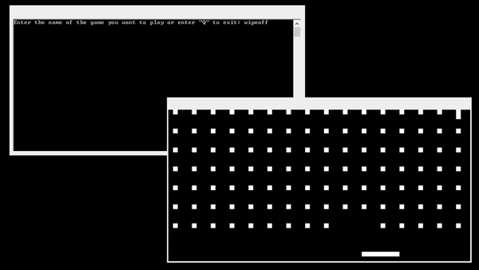
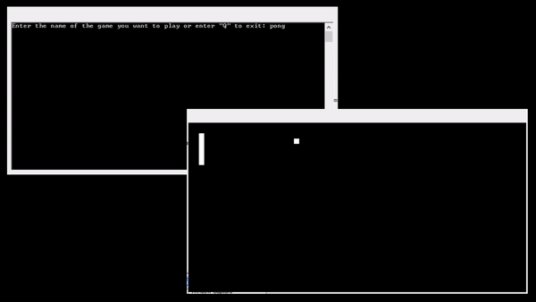
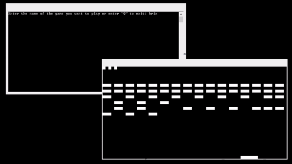

Joseph Daniel Moreno
Projects
CSE Virtual Assistant
A conversational AI developed for Microsoft as my group senior project.
It was made specifically to converse with CSE students, providing advice and information about the CSE department.
We used Microsoft's bot framework, Azure, and C# to create it.
Chip-8 Emulator
A personal project I took on to understand more about video game emulators.
A bulk of the code is translating the Chip-8's instructions to C++ syntax, but the Chip-8 is a good starting point for understanding emulators because of its small instruction set, consisting of 35 opcodes. (Wikipedia article for the Chip-8).
Keystroke input and audio-visual output is done with the SDL library.
GitHub repository here.




Wi-Fi Pass Code System
This is the final project I made for my embedded systems course.
The system authenticates 4 numbers that are input by a user.
The design uses an ESP8266 ESP-01 Wi-Fi module, a PIC18F45K50 MCU, and a 4 by 4 keypad.
The microcontroller processes the input from the keypad, sends it to the Wi-Fi module,
and the Wi-Fi module displays the information in an HTML page.
GitHub repository
here.
Link to video and playlist here.
Project Report (PDF)
FPGA Pattern Recognizer
This is the final project my partner and I made for our FPGA course.
The design is meant to count the number of completed patterns it detects and it should also keep track of active patterns.
"Patterns", pertaining to this project, is just a sequence of numbers.
For example, if the design is meant to detect the pattern 1 -> 3 -> 5 and it receives three 1s on the next three rising clock edges, then there are three active patterns of 1 -> 3 -> 5.
Continuing with that example, if two 3s and two 5s are received by the design in no particular order in the next four rising edges, then there will be two completed patterns and one active pattern of 1 -> 3 -> 5.
GitHub repository here.
Project Report (PDF)
CMOS 8 by 8 Multiplier
This is the final project I made for my CMOS VLSI course.
It is a transistor-level circuit that multiplies two 8-bit numbers together and it had to implement SIPO registers to cut down on the number of pins.
The design was created using Cadence Virtuoso's Layout Editor and tested/corrected using Virtuoso's Analog Design Environment.
Project Proposal (PDF)
Project Report (PDF)